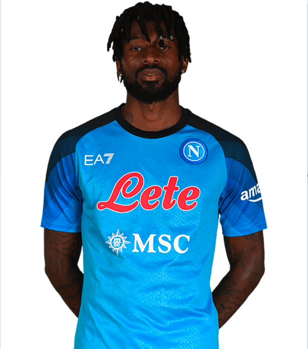

Personal Information
Name: Zambo Anguissa
Birthdate: November 16, 1995
Nationality: Cameroonian
Height: 184 cm (6 feet, 0 inches)
Position: Defensive midfielder | #99
About The Player
André-Frank Zambo Anguissa, commonly known as Zambo Anguissa, is a Cameroonian professional footballer who plays as a defensive midfielder for the English Premier League club Fulham and the Cameroon national team. Born on November 16, 1995, in Cameroon, Zambo Anguissa began his professional career at the age of 17 with the Cameroonian club Cotonsport Garoua. He later moved to France, where he played for clubs such as Olympique de Marseille and Villarreal before joining Fulham in 2018. Zambo Anguissa is known for his strength, tackling ability, and excellent passing skills. He is also versatile, capable of playing in multiple positions in midfield and defense. Zambo Anguissa has represented the Cameroon national team since 2017 and has played in major tournaments such as the Africa Cup of Nations. At 27 years old, Zambo Anguissa is considered one of the best defensive midfielders in the Premier League and is highly valued by both club and country.
| Statistics in All Competetions | |
|---|---|
| Appearances | 35 |
| Minutes Played | 2921 |
| Goals Scored | 3 |
| Assists | 7 |
| Passes | 2017 |
| Yellow Cards | 2 |
| Red Cards | 0 |